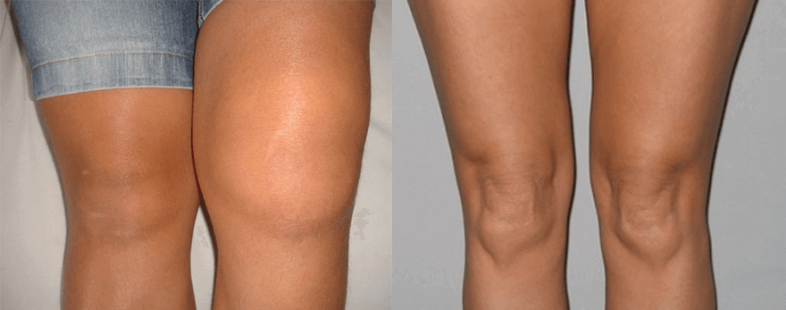

Ultraj farmaceutic în or. Moscova! Sau cum farmaciștii noștri hapsâni ascund cel mai vândut preparat european pentru tratarea articulațiilor
Medicul Croitoru: «Rețineți gândul simplu și să nu ascultați niciodată pe nimeni: bolile articulațiilor și de spate sunt tratabile chiar și la o vârstă înaintată»
«Personal am să expediez la primii 60 de cititori cel mai bun remediu pentru spate și articulații cu o reducere de 70%.»
Practica tratamentului – peste 45 de ani.
Medicul Croitoru a declarat că va trata osteocondroza de 18 ani în câteva luni. Că va vindeca complet o bunicuță cu artrită avansată în 78 de zile. Că durerile articulare cu un tratament corect vor trece în 4 zile! Și pe parcursul a 48 de ani de activitate el a confirmat cele declarate cu fapte reale. Imediat după difuzarea pe postul de televiziune Pro TV Chișinău (pe tema "cum să menținem articulațiile sănătoase la orice vârstă"), renumitul chirurg, Ion Croitoru a cceptat să ne ofere un interviu.
— Bună ziua, dl Croitoru. Spuneți, este adevărată afirmația că afecțiunile articulare și osteocondroza sunt însoțitoarele obligatorii ale vârstei înaintate?
Bună ziua, Elena! Desigur că este adevărat. Însoțitoarele obligatorii ale vârstei înaintate – este încrederea excesivă în medicii care vă tratează timp de 10 ani și nicidecum nu pot să vă vindece. Dar, în realitate, articulațiile, condroza și întregul schelet sunt tratabile la orice vârstă. Acesta nu este un miracol, ci știință obișnuită.
Mai mult, dacă știți secretul și cu un pic de disciplină, este posibil să vă tratați chiar acasă și foarte repede, ceea ce fac mii de pacienți ai mei.
— Și în ce constă acest secret?
— Secretul constă în faptul să înțelegeți ce și de ce vă doare. În general, enciclopediile prezintă până la 147 de posibile cauze de dezvoltare a osteocondrozei și artrozei, dar adevărul este că articulațiile, vertebrele și cartilajele își pierd elasticitatea, de aici provine și durerea. Acestea se consumă drept consecință a unei aprovizionări cu sânge neadecvate.
Acesta este secretul: prin restabilirea aprovizionării cu sânge a articulației, noi o tratăm!
— Da, dar se consideră că este aproape imposibil să fie restabilită aprovizionarea cu sânge după 45 de ani?
- Toate sunt prostii! Mi-am scos soția de pe scaunul cu rotile după o boală teribilă, iar asta e mai grav decât 45 de ani.
—Și cum, totuși, se poate restabili aprovizionarea cu sânge la acestă vârstă?
— Deja de 2 ani pe piața europeană este prezent un preparat miraculos destinat tratamentului articulațiilor –.Din punctul de vedere al eficienței, acesta depășește de câteva ori analogurile: oferă nu numai un efect rapid după începerea utilizării, ci și restabilește funcția naturală a articulațiilor,este de notat că nu produce efecte secundare (niciunul).
Acest preparat, care ne permite în cel mai scurt timp, în doar 4 zile, să uităm de durerile de spate și articulare și în câteva luni să tratăm cazurile cele mai dificile.
Preparatul include produse naturale de apicultură. Crema se aplică pe zona problematică sau pe o parte a corpului și ajută la înlăturarea durerii de spate și articulații Procesele regenerative se produc fără intervenții chirurgicale.
Cu doar o singură aplicare se activează 930 000 de celule, care favorizează circulația sanguină, și astfel are loc vindecarea. Aici este importantă stabilitatea.
a creat în Europa o adevărată revoluție printre remediile de tratare a articulațiilor. Un asemenea preparat util și eficient nu a mai existat. A apărut preparatul în anul 2017 și crearea acestuia a fost precedată de peste 6 ani de studii clinice. Practic, imediat după plasarea sa pe piață, a depășit analogurile după toți indicii și actualmente este cel mai vândut preparat destinat tratării articulațiilor .
- Foarte interesant! Povestiți mai detaliat despre acest preparat cititorilor noștri.
— Centrul nostru este primul în țară care a obținut un acces certificat la noul preparat pentru osteocondroză și dureri articulare. Recunosc, când am auzit de el pentru prima dată, pur și simplu, am râs, întrucât nu credeam în eficacitatea acestuia. Dar am fost uimit când am finalizat studiile clinice
Rezultatele studiilor clinice ale preparatului :
Studiile clinice ale noului preparat s-au desfășurat la sfârșitul anului 2017 la baza ICȘ de Reumatologie. La acestea au participat în total 3289 de persoane
- 94% au observat o dispariție completă a durerii peste 5-10 minute după utilizarea preparatului
- 91% au scăpat de dureri și edeme la nivelul articulațiilor
- La 92% s-a restabilit țesutul cartilaginos după tratament
- 98% s-au eliberat de artrită și artroză
- sună impresionant. Dar explicați-ne ce înseamnă aceasta pentru oameni obișnuiți cu boli?
— Aceasta înseamnă că medicina medievală română a rămas în trecut și aveți oportunitatea să tratați afecțiunile acasă într-o lună. nu îngheață și nu tranchilizează, ci repornește la nivel celular organismul. Preparatul înlătură cauza bolilor și restabilește funcția normală, inițială a articulațiilor și vertebrelor. Bolnavul nu numai se eliberează de simptome, ci și înlătură rădăcina bolii - aprovizionarea cu sânge a cartilajelor care este slăbită de celulele îmbătrânite și lente.
Din prima zi crema revigorează sistemul regenerativ al organismului. Și, desigur, ameliorează durerea, veți sesiza imediat. Dar peste două-trei săptămâni tratamentul se va termina și este important să nu admiteți apariția repetată a durerii, astfel, vă recomand să repetați operativ tratamentul.
ajută numai la artroză și osteocondroză?
Nu, v-am mai spus: preparatul acționează la nivel celular, restabilind aprovizionarea cu sânge. El tratează orice boală legată de articulații și vertebre: artroză, artrită, sciatică, reumatism, radiculită, osteocondroza, hernia discurilor. Luxații, lovituri, vânătăi, fracturi și chiar natoptici - crema este surprinzător de eficientă.
— cred că mulți vor întreba: dar unde putem s-o cumpărăm?
Noi am vrut să începem vânzări de mari proporții în farmacii, du nu am ajuns la un numitor comun cu farmaciștii, întrucât crema poate să le afecteze afacerile. Oamenii de ani de zile cumpără medicamente din farmacii, dar numărul bolnavilor devine tot mai mare și lor aceasta situație le convine.
De aceea acum se poate de cumpărat produsul numai de pe site-ul oficial. Dar aici este și un avantaj: eliberarea preparatului are loc fără intermediari, de aceea prețul său este de 5 ori mai mic decât în alte țări.
Furnizarea se efectuează prin intermediul serviciilor poștale, prin rambursare, și pentru utilizarea preparatului nu aveți nevoie de asistența unui specialist, tratamentul se produce acasă. Așadar, nu asculați vorbele mele. Încercați preparatele altor producîtori. Dar sunt convins că nu veți găsi un alt produs care să se asemene din punctul de vedere al eficienței, chiar parțial, cu .
— Dl Croituru, vă mulțumesc pentru interviu! Poate doriți să spuneți ceva cititorilor noștri înainte de a ne lua rămas bun?
>Da! Da, desigur. Vreau să atrag atenția cititorilor că afecțiunile de spate și articulare întineresc și chiar durerile neînsemnate periodice trebuie să fie un motiv ca să relevăm problema. Nu medicul trebuie să vă convingă să vă tratați.
Rețineți: afecțiunile provocate de durerile de spate și articulații nu aduc doar disconfort. Ele vă micșorează viața cu 10-15 ani.
- P.S.: Dl Croituru a avut grijă personal să vândă primilor 60 de cumpărători preparatul la un preț redus! Duceți-vă pe site-ul oficial și poate veți avea ocazia să fiți printre cei norocoși.
A intervievat Elena Musteață
Poze din surse deschise
De ce este nevoie ca să primești preparatul ?
În perioada în care este valabilă promoția ( ) este necesar:
- Să completați comanda pe numele dvs. și să introduceți telefonul pe site-ul oficial.
- să așteptați apelul operatorului și să specificați adresa de livrare a preparatului.
- Peste 4-7 de zile (necesare pentru livrare) trebuie să vă duceți la oficiul poștal și să primiți preparatul.
Nicolai:-23 ore în urmă
Am făcut comandă de această gel (păcat că atunci nu erau promoții în vigoare). A fost livrată foarte repede. Rezultatul m-a uimit. Toate durerile legate de osișoare au trecut. De câțiva ani mă tot dureau genunchii și spatele.
După vânătoarea de iarnă mă dureau articulațiile. Am citit multe recenzii bune despre crema și am plasat comanda. Nu mă așteptam la un rezultat deosebit, dar chiar în următoarea zi după aplicare am sesizat că mă simt mult mai bine! Am devenit mai mobil, articulațiile nu "mă chinuie". Vă recomand!
Maria:-21 ore în urmă
Am făcut comandă de acestă gel 2 luni în urmă pentru soțul meu. Suferea de dureri de spate. Spune că durerea a trecut definitiv. După cursul de tratament încă nu a avut niciun "junghi". Și mă bucur că a început să facă mai multe pe acasă:)
Am citit în internet recenziile - dacă este o gel excelentă, de unde se iau recenzii rele? Poate că totul nu este altceva decât un alt divorț?
Rodica, din nefericire, persoane care vor să facă bani pe seama problemelor altora mai există, de aceea sunt site-uri pe internet care ne plagiază. Am fost, de asemenea, informați că majoritatea recenziilor negative au fost "cumpărate" de oameni influenți din domeniul medicinii cărora le-am făcut o concurență prea mare. În cazul în care veți face comanda prin site-ul oficial, vă garantez un rezultat de 100%!
Cu respect, Ion Croitoru.
Pe mine produsul m-a ajutat mult! Genunchiul era umflamat, nu eram în stare să îndoi piciorul. Tata a adus nu știu de unde crema artreyd și slavă Domnului! Observați diferența:

O colegă de lucru s-a tratat cu acestă gel. A făcut numai remarci bune cu privire la acestă gel. Și eu am observat că a încetat să șchiopăteze. Am făcut o comandă pentru mine și mama cât mai durează promoția. Mulțumesc!
Știu, este un remediu miraculos! Timp de 5 ani am încercat toate unguentele, plasturii, pastilele și nu m-a ajutat nimic. Spre fericire, sora mi-a recomandat produsul Zdorov. Am scăpat de toate problemele de spate și articulațiile picioarelor.
Silvia:-15 ore în urmă
Interesant. Am hotărât să comand și eu.
Un medicament excelent! Îl aplic doar de o săptămână, dar rezultatul este evident
Fiica mea a comandat pentru mine. Nu am avut niciodată încredere în aceste medicamente noi. Dar aici recunosc: mai mult ca nu m-a ajutat nimic!
L-am comandat o săptămână în urmă și deja ieri l-am primit la oficiul poștal. L-am plătit tot acolo. Astăzi încep să-l aplic.
Am avut dureri lombare toată viața. Este o problemă ereditară. M-am adresat la toți chiropracticienii, maseurii și vindecătorii populari. În ultimii ani îmi legam cu greu șireturile. Am citit despre multe lucruri bune, dar mă temeam să comand. Și în zădar. Acum regret că nu am început mai înainte să-l utilizez. Spatele meu nu a mai fost într-o formă atât de bună de 17 ani! Vă sfătuiesc să încercați.
Medicii mă tratează deja de 3 ani Sper ca să mă ajute. Am făcut comanda, domnișoara de la telefon mi-a oferit o consultație. Aștept pachetul.
Am comandat această gel. Operatorul a spus că au rămas puține ambalaje în promoție. Grăbiți-vă, dacă doriți să comandați!
Mai repet o dată că , al cărui REZULTAT ÎL GARANTEZ LA 100%, poate fi comandat actualmente numai pesite-ul oficial. Ca să nu greșiți, pur și simplu apăsați butonul roșu de mai jos, introduceți datele de contact pe site-ul oficial, după care consultanții noștri vă vor explica totul în detaliu. Spre regret, nu putem să aplicăm permanent o asemenea reducere și este foarte probabil că, în legătură cu cererea mare a cremei, mâine vânzările să fie oprite pentru o perioadă nedeterminată. De aceea, dacă dvs. sau rudele dvs. au avut probleme cu durerile articulare, plasați comanda acum. Și vă rugăm frumos să vă păziți de contrafaceri.
Cu respect, Ion Croitoru.